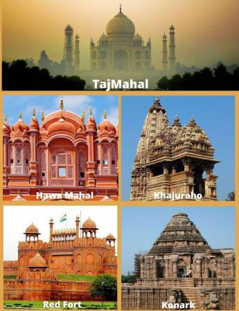

<body style="background-color: red;">
    <center>
<h2 style="color: white;">Historical places in INDIA</h2>

</center>
<map name="image-map"><area target="_blank" alt="taj" title="taj" href="https://en.wikipedia.org/wiki/Taj_Mahal" coords="3,1,343,133" shape="rect">
<area target="_blank" alt="hawa" title="hawa" href="https://en.wikipedia.org/wiki/Hawa_Mahal" coords="174,295,4,136" shape="rect">
<area target="_blank" alt="khaj" title="khaj" href="https://en.wikipedia.org/wiki/Khajuraho_Group_of_Monuments" coords="174,295,343,142" shape="rect">
<area target="_blank" alt="red" title="red" href="https://en.wikipedia.org/wiki/Red_Fort" coords="174,295,2,444" shape="rect">
<area target="" alt="konark" title="konark" href="https://en.wikipedia.org/wiki/Konark_Sun_Temple" coords="344,300,172,449" shape="rect"></map>
</body>                                         